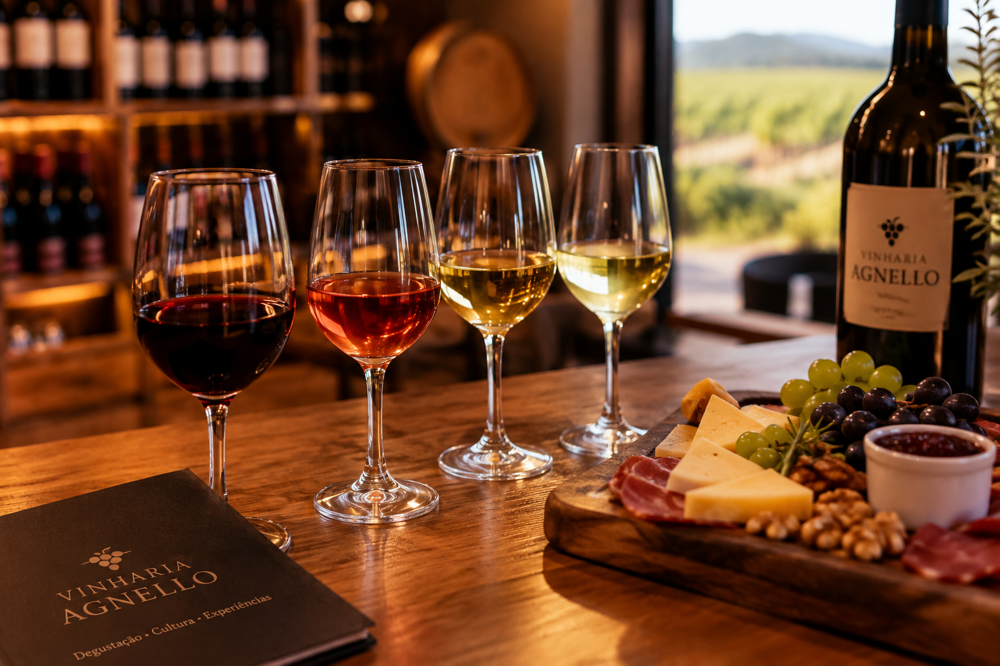

Experiências com vinhos
Na Vinharia Agnello, nossos visitantes podem conhecer diferentes experiências relacionadas ao mundo dos vinhos, desde degustações até momentos especiais para aprender mais sobre cada variedade.

O que você pode encontrar
- Degustação de diferentes tipos de vinhos
- Conhecimento sobre variedades de uvas
- Apresentação sobre o processo de produção
- Harmonização entre vinhos e alimentos
Uma experiência para todos
As experiências foram pensadas para aproximar as pessoas da cultura do vinho e proporcionar um momento agradável, independentemente do nível de conhecimento sobre a bebida.